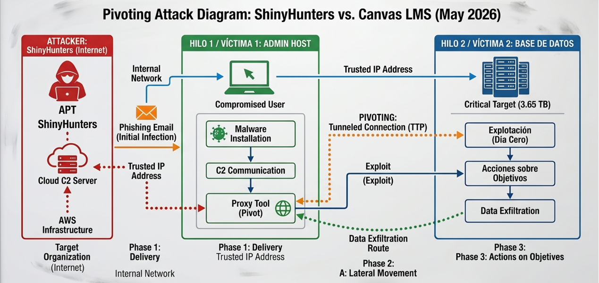

Actividad 18
Análisis de intrusiones mediante el Modelo Diamante y Cyber Kill Chain.
El análisis de amenazas modernas exige marcos metodológicos robustos que permitan correlacionar los hallazgos técnicos con la inteligencia procesable. El Modelo Diamante de Análisis de Intrusiones se establece como un paradigma ontológico que describe de manera formal cualquier evento de seguridad a través de la relación fundamental entre cuatro vértices: Adversario, Capacidad, Infraestructura y Víctima.
En el presente reporte, aplicamos esta metodología, en sinergia con el framework de Cyber Kill Chain, para diseccionar el incidente crítico perpetrado por el grupo de cibercrimen de élite ShinyHunters contra la plataforma Canvas LMS de Instructure en mayo de 2026. A través de la descomposición de los hilos de actividad y el análisis de movimiento lateral (Pivoting), justificaremos la ruta de ataque que derivó en la exfiltración masiva de registros a nivel mundial y evaluaremos los fallos de resiliencia en la infraestructura en la nube.
Parte 01. Comprensión del modelo (Caso Canvas - Mayo 2026)
| Elemento | Descripción | Ejemplo práctico (Caso Canvas 2026) |
|---|---|---|
| Adversario | El actor o grupo responsable del ataque. | ShinyHunters: Grupo de ciberdelincuencia de élite que reapareció para realizar este ataque masivo y extorsión pública. |
| Capacidad | Herramientas, técnicas y procedimientos (TTPs) utilizados. | Explotación de vulnerabilidad en cuentas "Free-for-Teacher" y uso de fallos de día cero (0-day) en el sistema de tickets de soporte para escalar privilegios. |
| Infraestructura | Recursos lógicos que conectan al adversario con la víctima. | Infraestructura de AWS (Amazon Web Services) de Instructure, dominios de C2 ocultos y la red TOX para las comunicaciones de extorsión. |
| Víctima | El objetivo principal y secundarios del ataque. | Canvas (Instructure) como víctima primaria; casi 9,000 instituciones educativas y sus 275 millones de usuarios como víctimas secundarias. |
El análisis del comportamiento de ShinyHunters revela un perfil de amenaza altamente motivado por fines económicos y de prestigio en la Dark Web. Demostraron una gran destreza técnica al no limitarse al robo de credenciales estáticas, sino que orquestaron un encadenamiento de vulnerabilidades sofisticado. Su capacidad técnica les permitió abusar del entorno gratuito de Canvas ("Free-for-Teacher") y pivotar mediante un exploit de día cero (0-day) en los sistemas de soporte, lo que demuestra un profundo proceso de reconocimiento y desarrollo de exploits a la medida. Además, ejercieron presión psicológica y mediática utilizando la red X (antes Twitter) para publicar paneles de administración comprometidos.
La gravedad de la intrusión no residió en un malware destructivo (como el ransomware tradicional de cifrado), sino en el dominio de la topología en la nube del objetivo. El vértice de infraestructura fue vulnerado drásticamente cuando los atacantes lograron acceso lateral a los buckets de almacenamiento dentro de la nube de AWS de Instructure. Esta posición de privilegio no saneada fue el punto de inflexión que permitió la exfiltración silenciosa y masiva de los registros educativos sin detonar alertas críticas a tiempo.
Parte 02. Análisis de evento (Modelo Diamante: Caso Canvas Mayo 2026)
| Metacaracterística | Descripción del evento |
|---|---|
| Marca de tiempo | 30 de abril al 12 de mayo de 2026. El ataque inicial fue el 30/04; la segunda intrusión y defacement ocurrieron el 07/05, con cierre de negociaciones el 11/05. |
| Fase | Acciones sobre los objetivos (Exfiltración y Extorsión). El evento incluyó el robo de 3.65 TB de datos y el compromiso de los portales de inicio de sesión (defacement). |
| Resultado | Exitoso (Crítico). ShinyHunters logró la exfiltración masiva y forzó a Instructure a pagar un rescate para evitar la filtración de 275 millones de registros. |
| Dirección | Multidireccional. Outbound para la exfiltración de los 3.65 TB e Inbound para el compromiso de los portales de login (330 instituciones afectadas directamente). |
| Metodología | Explotación de vulnerabilidad en cuentas "Free-for-Teacher". Usaron estas cuentas para escalar privilegios y acceder a sistemas de soporte/producción. |
| Recursos | Vulnerabilidad de día cero en tickets de soporte, infraestructura de almacenamiento AWS, y plataforma de comunicación cifrada TOX para la negociación. |
Desde la óptica analítica, el evento se clasifica como Crítico y Exitoso. La métrica de volumen resulta alarmante: la extracción de 3.65 Terabytes de datos lo consolida como uno de los mayores robos documentados en el sector educativo tecnológico. El impacto trascendió los sistemas corporativos para afectar directamente la operatividad académica de casi 9,000 escuelas a nivel global durante un periodo sumamente sensible (semana de evaluaciones finales).
Uno de los hallazgos técnicos más importantes para nutrir el Modelo Diamante en este caso fue la demostración de persistencia sostenida por parte de ShinyHunters. A pesar de los esfuerzos iniciales de respuesta a incidentes de Instructure, el grupo logró reingresar al entorno el 7 de mayo de 2026. Su capacidad para volver a vulnerar el perímetro y burlarse públicamente de los parches de seguridad aplicados evidenció que la infraestructura comprometida no había sido saneada correctamente, manteniendo túneles y puertas traseras persistentes.
Parte 03. Relación con la Kill Chain
| Evento | Fase Kill Chain (Lockheed Martin) |
|---|---|
| Envío de phishing | Entrega (Delivery): Los atacantes enviaron correos dirigidos a personal con cuentas "Free-for-Teacher" para obtener credenciales iniciales. |
| Detección de malware | Instalación (Installation): Se refiere al momento en que el sistema detecta la presencia de scripts maliciosos o herramientas de persistencia dejadas por el grupo. |
| Ejecución del malware | Explotación (Exploitation): El código malicioso aprovecha la vulnerabilidad de día cero en el sistema de tickets de soporte para elevar privilegios. |
| Conexión a C2 | Comando y Control (C2): El canal establecido para que ShinyHunters enviara comandos a la infraestructura de Canvas y coordinara la exfiltración. |
La correlación de los eventos con la metodología Cyber Kill Chain de Lockheed Martin evidencia un ciclo de intrusión completo. Si bien la tabla superior mapea la cadena de suministro táctico de las herramientas maliciosas, el incidente de mayo de 2026 se caracterizó por la brutal contundencia de su última etapa. La fase de Acciones sobre los objetivos (Actions on Objectives) operó en dos vectores simultáneos:
- Exfiltración de Datos: El empaquetamiento y robo sistemático y silencioso de los 275 millones de registros de estudiantes y docentes contenidos en la base de datos central.
- Ciberextorsión y Daño a la Integridad: A diferencia de tácticas puramente furtivas, el grupo optó por una extorsión agresiva utilizando la red descentralizada TOX, amenazando la reputación de la empresa tras ejecutar defacements en los portales de autenticación de diversas instituciones.
Parte 04. Hilos de Actividad y Movimiento Lateral (Pivoting)
El primer hilo de actividad documenta la fractura del perímetro externo de seguridad, donde el adversario logra establecer su base de operaciones primigenia dentro de la red corporativa. La secuencia táctica ejecutada fue la siguiente:
- Evento 1: Envío y apertura de correos de Phishing dirigidos al personal (Fase: Entrega).
- Evento 2: Infección e instalación de cargas maliciosas ocultas tras la interacción con el adjunto (Fase: Instalación).
- Evento 3: El host comprometido abre una conexión externa hacia el servidor C2 del atacante para aguardar instrucciones de red (Fase: Comando y Control).
- Evento 4: Reconfiguración del equipo infectado para actuar como un Proxy/Jump box. El atacante aseguró un punto de apoyo interno válido, eludiendo controles perimetrales.
Una vez superado el perímetro, el atacante abusó de la confianza implícita de la intranet. Utilizando la infraestructura de la "Víctima 1" (el administrador), se redirigió el flujo de ataque hacia el objetivo crítico real.
- Evento 1: Ejecución de escaneos de red internos desde el host administrativo para mapear la topología del data center en la nube (Fase: Reconocimiento interno).
- Evento 2: Despliegue de exploits internos o reutilización de tokens robados para escalar privilegios sobre los servidores de almacenamiento (Fase: Explotación).
- Evento 3: Tunelización y extracción clandestina de 3.65 TB de registros hacia la red externa, camuflando el tráfico a través del Jump box original (Fase: Acciones sobre los objetivos).
Dentro de la ontología del Modelo Diamante, la relación entre ambos hilos se califica técnicamente como un Ataque Transversal. El vértice de la "Víctima 1" sufre una mutación crítica: deja de ser un simple objetivo pasivo para transformarse lógicamente en un vértice de Infraestructura activa controlada por el adversario. Para los sistemas de monitoreo y logs de la Víctima 2 (los servidores de base de datos), las solicitudes maliciosas parecían provenir de una dirección IP interna confiable y validada, lo que enmascaró la verdadera identidad de ShinyHunters y garantizó la invisibilidad operacional de la intrusión.
